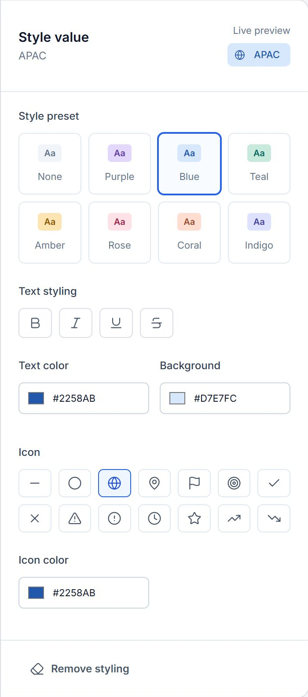
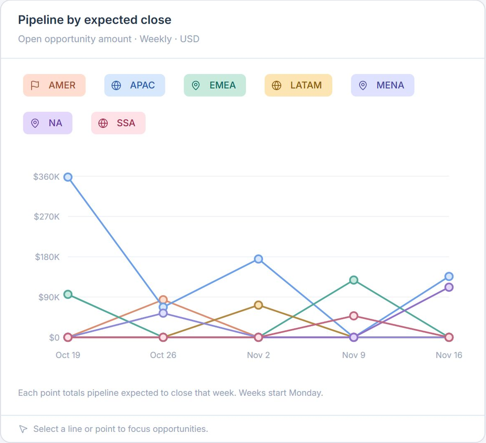

Style the shared value
- Needed
- A stable cue across views and changing charts.
- Chose
- One style attached to each dropdown value.
Charts reuse the assigned style as the number and order of data points change.
SugarAI · Conditional formatting
A sales manager set up dropdown styles for an entire dataset in under 5 minutes. Previously, a system admin spent hours configuring the same field separately for every module and view.
The problem
Sales leaders could define a region like APAC in a dropdown. Its color, however, came from each chart’s palette or a separately configured field highlight.
APAC might appear third in one chart and tenth in another. When its position changed, so did its color. Readers had to check the legend again.
Watch APAC change color as its position changes across charts.
| Opportunity | Region |
|---|---|
| APAC | |
The palette follows chart order, so APAC’s color changes.
Research
I reviewed the workarounds sales leaders and reps used to keep colors recognizable across views.
A field could be styled in one view and overlooked in another.
Charts assigned colors by position, so reps had to check the legend again to find the same region.
Teams had to keep track of those codes to reuse an exact shade.
Design challenge
The style had to belong to the dropdown value so a rep could recognize it wherever it appeared.
I kept the text label visible and offered presets alongside individual color and icon controls.
Product ecosystem
I mapped how a value defined in Sugar Enterprise would appear in Sugar Discover, Sugar Market, and Sugar Predict. The walkthrough below focuses on Enterprise.
01 · Define in Enterprise
Configured by the sales leader.
Shared with the team.
02 · Shared value
APACSame value. Same styling.
03 · Carry it across products
Sales leaders + their teams
Lists · Reports · Dashboards
Desktop + mobile
Design decisions
Charts reuse the assigned style as the number and order of data points change.
Sales leaders can refine text, background, and icons while keeping the list of choices in view.
Region names stay visible in badges and chart legends, giving teams a clear reference alongside the visual cue.
Delivery plan
I worked with stakeholders to ship the configuration tools and dropdown styling first. Numeric ranges depended on that foundation.
Conditional formatting roadmap
Create the configuration foundation around existing dropdown values, preparing the experience for sales leaders to define how those values look.
Add value styling that stays recognizable in lists, records, reports, and dashboard report views.
Expand conditional formatting beyond dropdowns to support numeric values and numeric ranges.
The solution
The walkthrough starts with the sales leader who sets the color and ends with the rep who reads the dashboard.
Define
A sales leader chooses a preset for APAC, adjusts the style, previews it, and saves. The recording follows the same value into the team’s everyday views.
Configure
The settings and preview sit beside the dropdown list, so a leader can compare values while editing.

The live preview shows the selected value’s appearance before saving, so each adjustment is easy to assess.
Seven color presets give sales leaders a quick starting point. None keeps a value unstyled when it needs no visual emphasis.
Bold, italic, underline, and strikethrough provide ways to distinguish values alongside color.
Separate text, background, and icon colors support precise brand or team conventions, with HEX inputs for exact choices.
Icons add a recognizable cue beside the label. Geographic, status, and attention symbols let the same controls support different kinds of field values.
Recognize
In the opportunity list, reps see the blue APAC badge beside each matching record.

APAC keeps the same blue treatment on every opportunity, giving the team a consistent cue while scanning records.
Labels and icons accompany the color. Each region remains identifiable alongside its visual styling.
Analyze
The report groups those opportunities by region. APAC stays blue when the chart type or sort order changes.

APAC stays blue when the bar chart orders regions by pipeline amount.
The donut uses the same regional styling, even though its legend presents the values in a different order.
Monitor
On the dashboard, the regional treemap, weekly trends, and opportunity records all use the same saved style.

Dashboard detail · Expected close by week

Tile area shows each region’s share of pipeline, while APAC keeps its assigned blue styling.
The opportunities widget uses the same blue APAC badge as the list view.
APAC retains its blue color family in the weekly expected-close chart as pipeline amounts change.
Results
The manager styled each value once for the whole dataset. Previously, a system admin spent hours configuring the same field for every module and view.
I attached the style to the dropdown value so its color stayed consistent across lists, reports, and dashboards, even when chart order changed.
I made presets the starting point and kept custom colors, text styling, and icons available for individual values.
Retrospective
I led the design from research through developer handoff. We shipped the setup tools first, then brought the saved styles into records, reports, and dashboards. Numeric ranges remained a separate piece of work.